But our future is
OURS
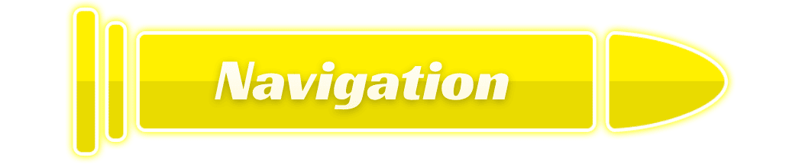
0%
1. Get out of my comfort zone. I want to specialize in other genres of video games other than visual novels in order to boost my audience and gain more experience. I can start even as early as now!
2. Gain recognition and increase my visibility. Within my college years, I want to reach out to more people and make myself known in the video game industry so more people can see my work and even potentially hire me so I can gain money to help support myself.
3. Collaborating with other popular game developers. I want to create meaningful, original work alongside creators and broaden my perspective on writing and development.
4. Establish my own studio or team. I want to learn and create with others because I believe that when a team combines ideas with strengths and skills, their efforts produce something fruitful. Together, we would be able to grow professionally and gain a variety of experience.
5. Last and most importantly, I want to earn enough money to support my family and inspire many people.
As stated in my career plan, if I am unable to achieve my plan as a video-game developer, I am certain I will go down these routes:
I chose website developer as my Plan B as I am open to expressing my creativity and programming skills through creating interactive and user-friendly websites that are also visually appealing. It aligns with my soft skills (creativity and problem-solving) and hard skills (experience in programming and graphic design); it will still allow me to explore different areas in the programming world while still applying my skills in visual design. Overall, I chose this career as an alternative as it still aligns with my skills.
I chose cybersecurity as my Plan C as I am interested in understanding how cyberattacks work, discovering vulnerabilities, and developing ways to keep people and their data safe, especially in an increasingly digital world. Unlike my other alternative options, cybersecurity creates more challenges for me to improve my skills in programming. It also challenges my problem-solving and adaptability skills, urging me to focus more on the technical side. Overall, I chose this career as an alternative as it proposes a good challenge for me.
I chose Graphic Illustrator as my Plan D as I am passionate about expressing my creativity and artistic abilities through digital illustration and visual design. It aligns with my soft skills (creativity, adaptability, and attention to detail) and hard skills (experience in digital illustration, concept art, and graphic design); it will allow me to explore different artistic styles, develop my skills further, and create unique visual works for clients. Overall, I chose this career as an alternative because it aligns with my artistic interests and allows me to turn my passion for art into a profession.
1. Time Management – Ability to organize tasks, prioritize responsibilities, and meet project deadlines.
2. Problem-Solving – Ability to identify challenges, troubleshoot errors, and find effective solutions.
3. Critical Thinking – Ability to analyze game mechanics, evaluate ideas, and make logical decisions.
4. Creativity – Ability to develop original concepts, characters, storylines, and gameplay experiences.
5. Communication – Ability to express ideas clearly and exchange feedback with teammates.
6. Teamwork and Collaboration – Ability to work effectively with programmers, artists, writers, and designers.
7. Adaptability – Willingness to learn new technologies, programming languages, and development techniques.
8. Patience and Perseverance – Ability to handle setbacks, learn from mistakes, and continuously improve projects.
9. Self-Discipline – Ability to stay focused, work independently, and remain productive.
10. Decision-Making – Ability to make informed choices regarding game design, development, and project priorities.
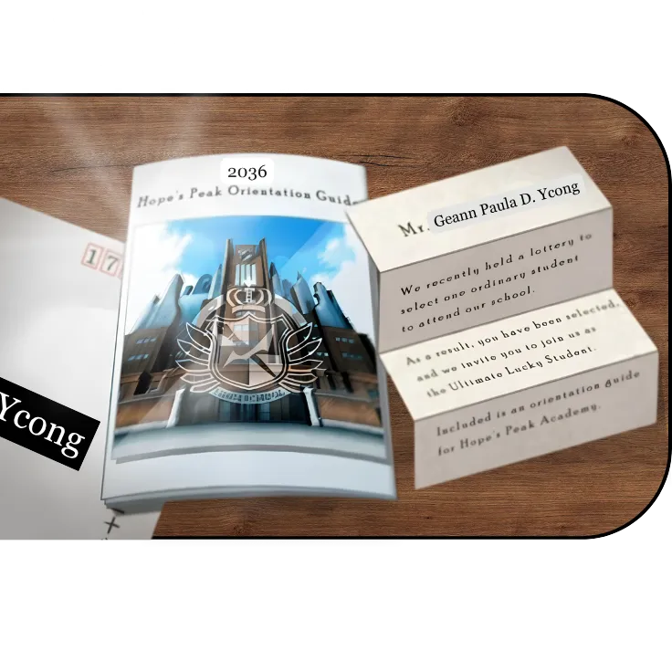
To my dearest self 10 years from now,
I am you from 2026. I am still a student at the Science and Technology Education Center with big dreams of showing my art and ideas to a wider audience. It has always been a dream of mine to do something as great as that, even with the many challenges that will come my way. I am certain I will do something like that in the future; however, I must ask: did I really go that far? I want to know if I was able to overcome these challenges and truly become the person I always wished to be, regardless of expectations or reality checks. The world is advancing toward efficiency and AI, reducing the arts to a mere hobby, not worth a job. I want to know if I was able to achieve those things and become successful.
If I did, what is it like? Were we able to gain the recognition we wanted? I wonder what kind of original games we made and how our fans treat our works. I hope they don't reduce our characters to their surface-level personalities. Speaking of games, did we collaborate with other franchises? I'm hoping to collaborate with Studio MDHR or maybe even Kodaka, if we're lucky! If not, then did we collaborate with smaller artists instead? I hope we at least inspired them.
In the end, I'll understand what you chose for us; I won't be too hard on myself. But don't force yourself to do something you don't want to. I'm already forced to do many things I don't want so I can rest easy in the future. Anyways, with Gundham Tanaka wisdom, Sonia Nevermind's incredibly large heart, and Kazuichi Souda and Gaku Maruko's cowardice, I am sure you will be guided to a better future. Because in the end, our future is ours.
Sincerely, Geann Paula D. Ycong
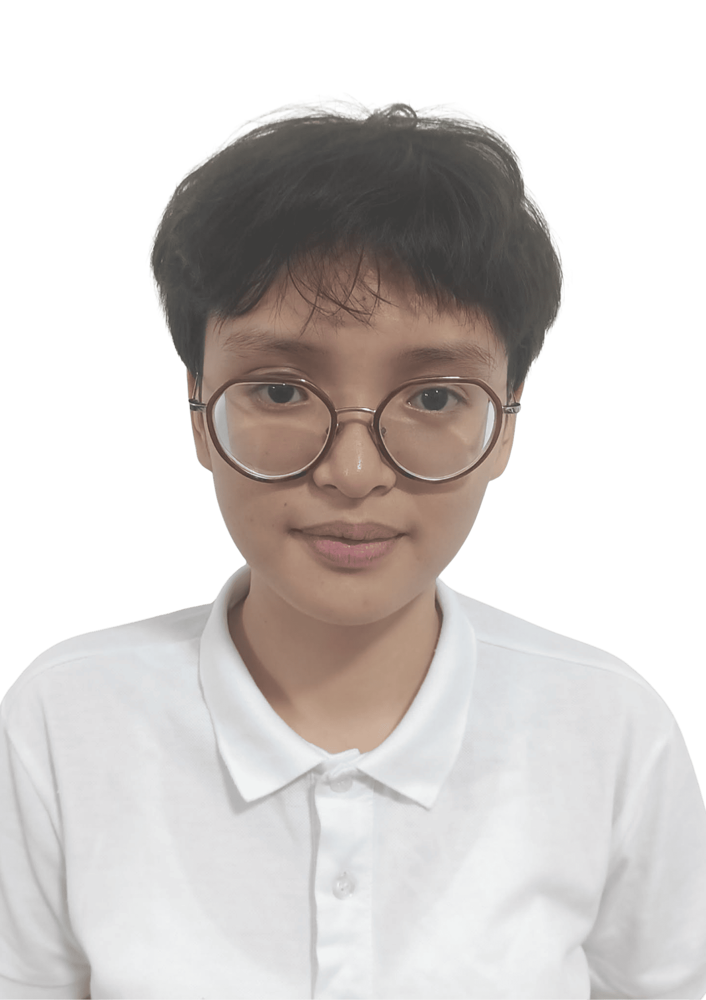
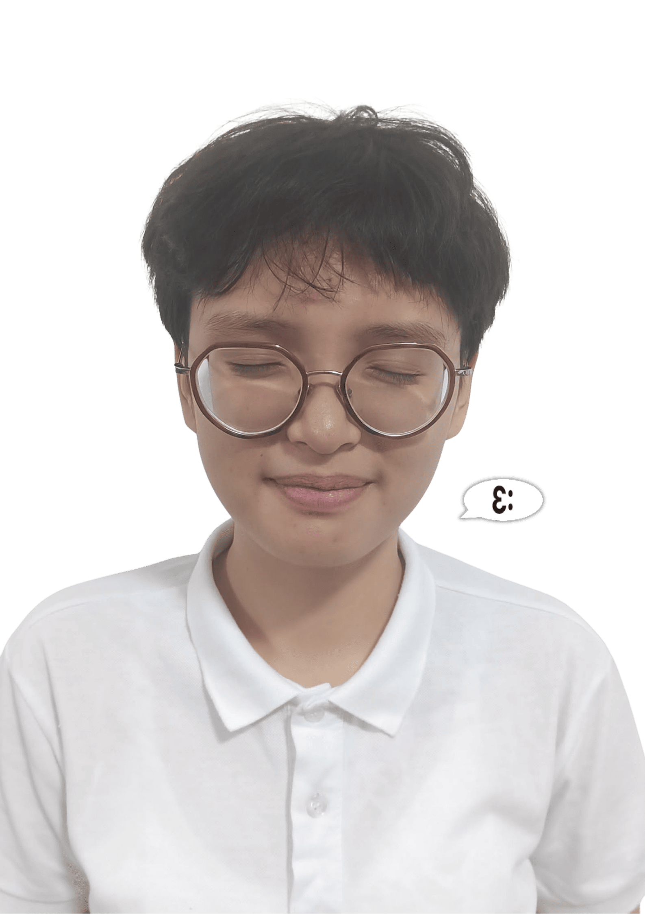
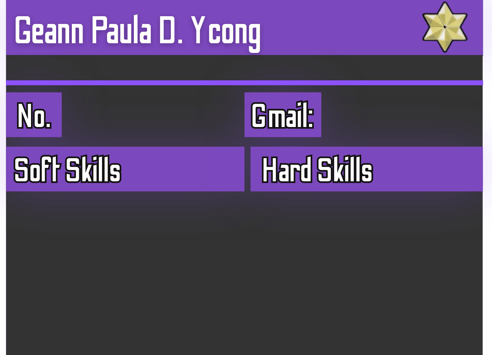
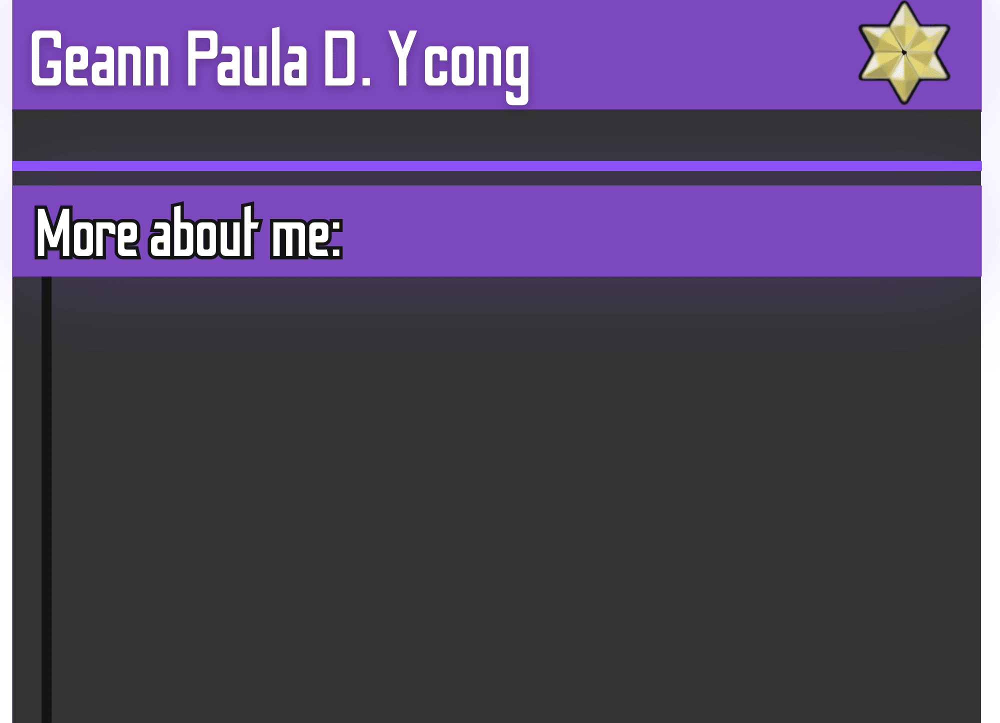
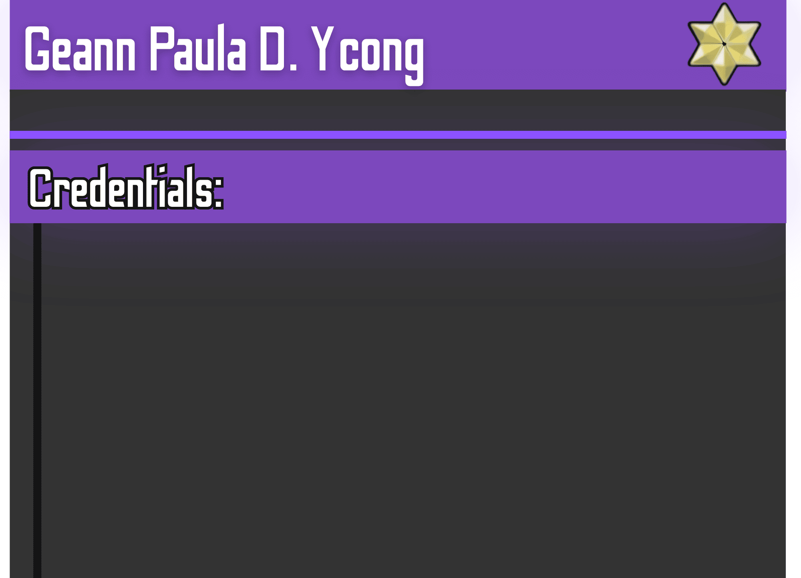
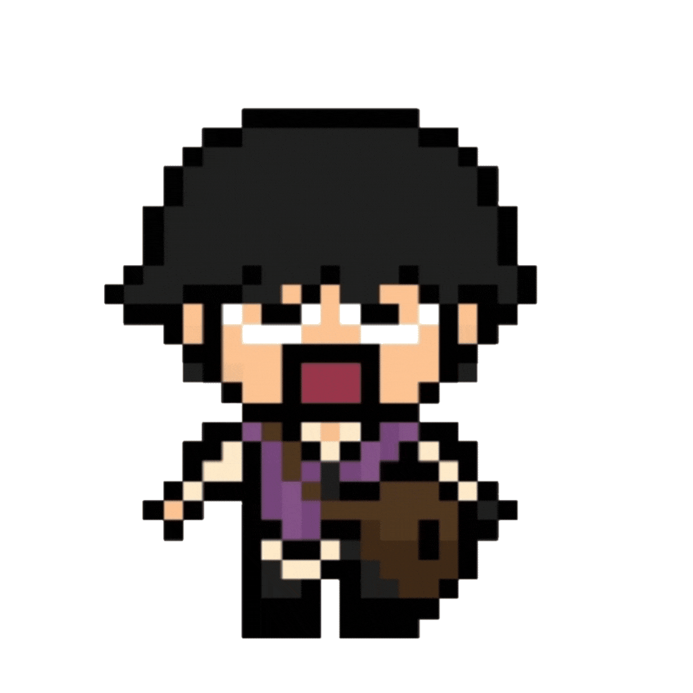
I wish to tell meaningful and interactive stories through the art of video games. I have been inspired by developers such as Studio MDHR and Kazutaka Kodaka and their respective works growing up.
I am open to express my creativity and programming skills through creating interactive and user-friendly websites that'll also be visually appealing.
I am interested in understanding how cyberattacks work, discovering vulnerabilities, and developing ways to keep people and their data safe especially in an increasingly digital world.
I have been an avid lover of the arts and illustration. I am able to adapt between a semi-realistic art style and a modern rubber-hose cartoon style.
Aside from family and cultural influences, I was influenced by my own passion for video games and the arts. I was inspired by artists like Jamie Hewlett and Rui Komatsuzaki, alongside game developers like Studio MDHR and Kazutaka Kodaka (as mentioned above). Additionally, my skills also align well with these jobs, such as digital illustration and coding, which are integral. I also have a bachelor's degree in Computer Science along with knowledge of mathematics, physics, and programming.
I prefer a hybrid work arrangement, reporting to the workplace three days a week and working from home for four days, with clearly defined employment terms, fair treatment, and respect for employee rights. I expect fair and transparent compensation, appropriate benefits, and a supportive work environment that promotes work-life balance and employee well-being. I also value opportunities for career advancement, professional development, and long-term growth within the company, alongside employers who uphold their responsibilities and provide a safe and respectful workplace.
I value:
I sincerely wish to not only see these behaviors in my future coworkers but also within myself.
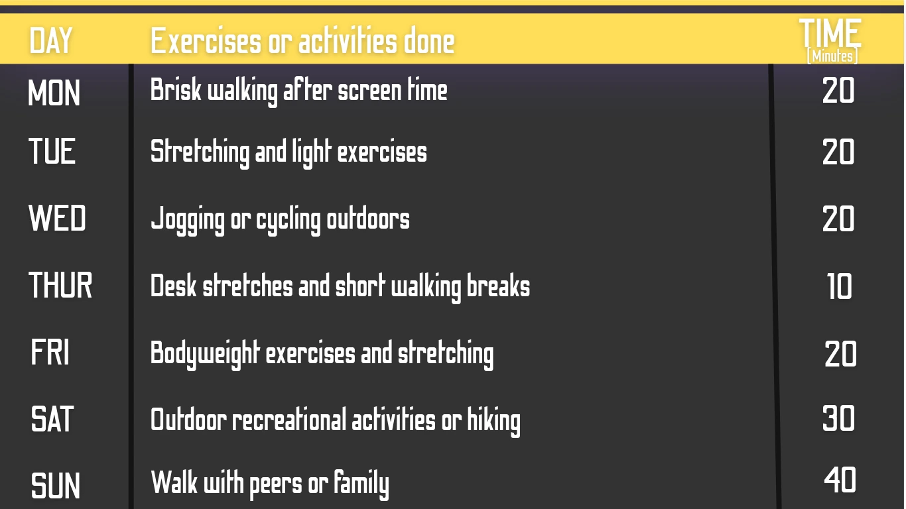
I balance the demands of game development with regular physical activity, taking movement breaks during long screen sessions and making time to exercise outside work as well as request for an ergonomic setup at work.
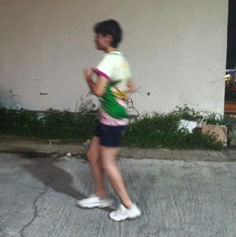
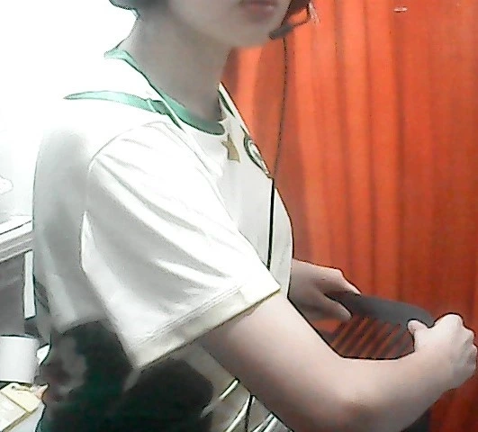